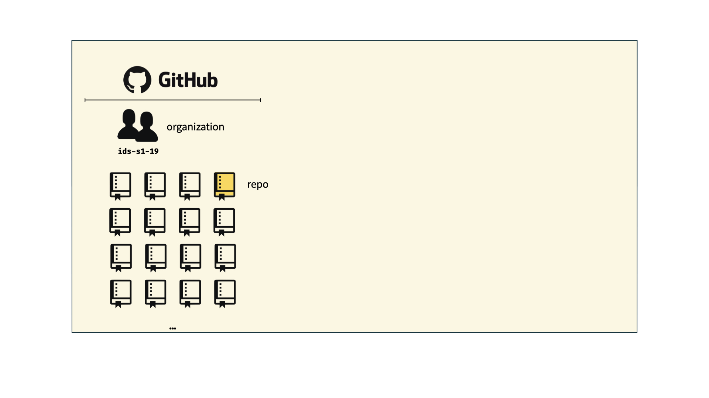
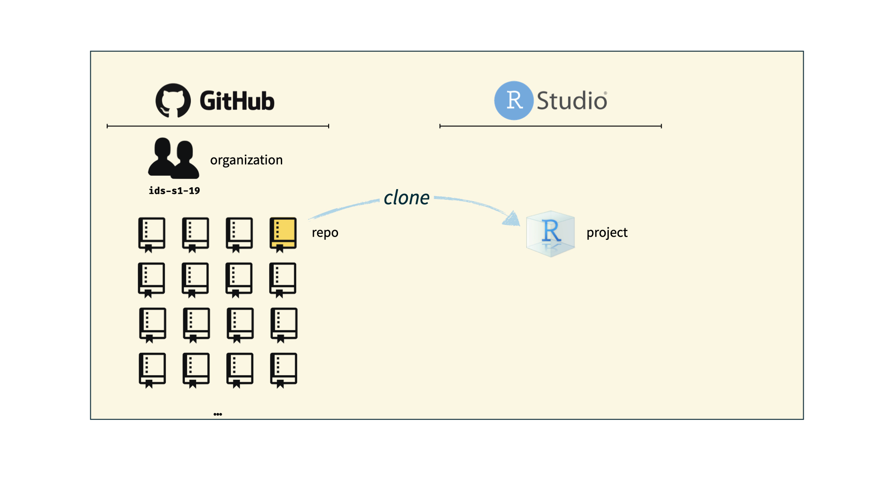
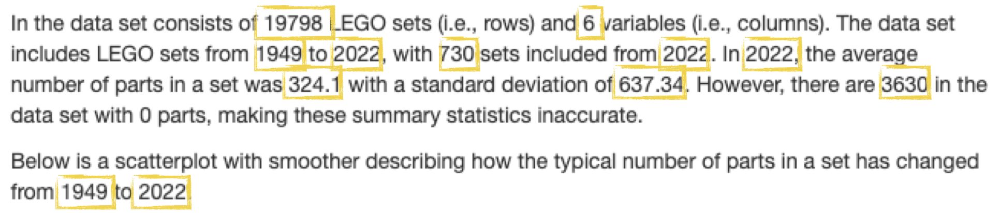

Github +
Reproducible
Reporting
Day 02
Plan for today:
- Questions from syllabus quiz
- Github
- Accessing your private repos
- render ➡️ commit ✅ push ⤴️
- Reproducible Reporting
Syllabus quiz
Which components of Stat220 are graded?
Syllabus quiz
What percentage of homework problems do you need to successfully complete to earn an A in this class?
Syllabus Quiz
How many tokens do you have available to use throughout the term?
5
Syllabus Quiz
What room of the CMC are Amanda’s drop-in hours in?
Syllabus Quiz
What scenarios describe an inappropriate use of AI in Stat220?
Questions from syllabus quiz
- Software packages for local installation
- Will the lab quizzes require memorizing R code?
- Tokens
Homework in Stat220
- Typically due on Wednesdays (Week 1: Friday)
- Due at 10pm (aligns with end of Stat Lab)
- 12 hour grace period (no penalty if turned in by 10am on Thurs)
- Beyond that, must use a token. Token form must be submitted by end of grace period (see Useful Links)
Github
Git + GitHub
- Git is a version control system - like “Track Changes”, on steroids
- It’s not the only version control system, but it’s a very popular one
- GitHub is the home for your Git-based projects on the internet—like DropBox but much, much better
- We will use GitHub as a platform for web hosting and collaboration
Why do we need it?
Versioning

Versioning (with human-readable messages)

How does it work for Stat220?

How does it work for Stat220?

How does it work for Stat220?

How does it work for Stat220?

Let’s try it!
- Follow the “Individual Assignment” directions at https://stat220-s25.github.io/computing/git-stat220.html to access your
day02repo and create an R project - Edit the .qmd file:
- Change “author” to your name
- Use
#to add descriptive section headers for each code chunk - Add a sentence or two describing the summary statistics of the dataset
- render ➡️ commit ✅ push ⤴️
- View on
github.comand confirm you can see your changes
Help! I don’t have a
day02 repo
- Never received github invite → Fill out the Welcome survey
- Never accepted GitHub invite → Look for it in your email and accept it
- Opening repo in Rstudio failes → Review/redo the steps in Git/Github for Stat220 for setting up PAT
- Still no luck? → Come to office hours or make an appointment with me!
Reproducible Reporting
Why do we need it?
Oops! I gave you the wrong set of data.
Why do we need it?
Karl – this is very interesting , however you used an old version of the data (n=143 rather than n=226). I’m really sorry you did all that work on the incomplete dataset.
Bruce
Adapted from Karl Broman
Other examples:
- The results in Table 1 don’t seem to correspond to those in Figure 2.
- In what order do I run these scripts?
- Where did we get this data file?
- Why did I omit those samples?
- How did I make that figure?
- “Your script is now giving an error.”
- “The attached is similar to the code we used.”
Adapted from Karl Broman
Reproducible data science
Short Term Impact
- Are the tables and figures reproducible from the code and data?
- Does the code actually do what you think it does?
- In addition to what was done, is it clear why it was done? (e.g., how were parameter settings chosen?)
Long Term Impact
- Can the code be used for other data?
- Can you extend the code to other things?
The toolkit
Scriptability \(\rightarrow\) R
Code environment \(\rightarrow\) RStudio
Literate programming (code, narrative, output in one place) \(\rightarrow\) Quarto
Version control \(\rightarrow\) Git / GitHub
What is Quarto?
An authoring framework for data science.
A document format (
.qmd).A software package
A file format for making dynamic documents with R.
A tool for integrating prose, code, and results.
A computational document.
Anatomy of a quarto doc
Chunk Options
What’s in .qmd:
```
test_function(20)
```How it looks in rendered file:
test_function(20)[1] 20This is a message.Warning in test_function(20): This is a warning!What’s in .qmd:
```
#| message: false
test_function(20)
```How it looks in rendered file:
test_function(20)[1] 20Warning in test_function(20): This is a warning!What’s in .qmd:
```
#| warning: false
test_function(20)
```How it looks in rendered file:
test_function(20)[1] 20What’s in .qmd:
```
#| echo: false
test_function(20)
```How it looks in rendered file:
[1] 20This is a message.Warning in test_function(20): This is a warning!What’s in .qmd:
```
#| eval: false
test_function(20)
```How it looks in rendered file:
test_function(20)Global options
Sometimes, you’ll want to set every chunk option at once. You can do so in the YAML header using execute:
---
title: "My report"
author: "Amanda Luby"
execute:
echo: false
---Parameters
---
title: Survivor
output:
html_document:
toc: true
toc_float: true
theme: flatly
params:
season: '20'
---Your Task
There’s an example HTML report on the schedule
Your task is to reproduce it in 02-example-lego.qmd
To be as reproducible as possible, you’ll need to use:
- YAML metadata
- YAML parameters
- Code chunks with appropriate options
- Inline R code
Where do I find
02-example-lego.qmd?
If you have a day02 repo, use that!
If you don’t have a day02 repo, you can find 02-example-lego.qmd on the schedule
Hints
- To begin, use inline R code to replace “hard coding” the quantities that are highlighted below.

For example, instead of typing 19798 you would include nrow(sets) as an inline code chunk. Make sure the report knits and you get the right values.
Next, add a parameter to your YAML header that stores the location of the data set. Make sure the report knits.
Change the code chunk where you load the data set to use the
dataparameter you just defined rather than the hard-coded URL. Make sure the report knits.Now, let’s make a parameter for the source of the data set so you don’t have to search where every mention of it in the report, it will be with the other metadata (where it belongs). To do this, add a parameter that gives the source of your data (call it
data_source) and set it equal to “the 2022-09-09 repository on Tidy Tuesday.” Make sure the report knits.At this point it looks like everything is working—awesome job! To put it to the test, let’s update the parameters of your report and knit it to see if everything changes as we would expect. Here are the new parameter values:
data: "https://raw.githubusercontent.com/stat220-w26/stat220-w26.github.io/refs/heads/main/data/lego_subset.csv"
data_source: "Stat220 website"- (optional) If you have time, or would like to try outside of class, I’ve created a practice gradescope assignment space. First, add .pdf output to your document and knit to PDF. Commit the PDF and push to github. Then, log into gradescope (you may have to go through the link on moodle the first time) and link your github repo to the submission space.
format:
html: default
pdf: default